Fonctionnalités
LionsHockey en images (données fictives)
Menu
Au lancement, le lion du club laisse place au menu. Chaque fonction a sa tuile ; la pastille « Aujourd'hui » suggère la capture d'entraînement en semaine et celle de match le week-end. Chaque écran a ses propres réglages.
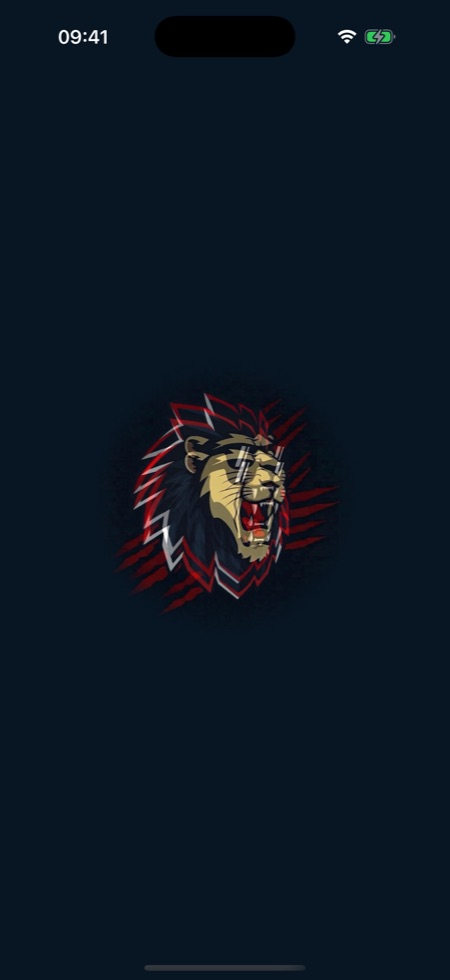
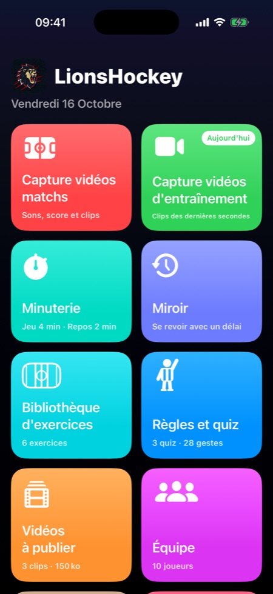
Capture vidéos matchs
- Six sons d'orgue à un toucher : but des Lions, but encaissé, Let's Go Lions, montée, défense, pénalité.
- Le score s'affiche en haut et suit les buts ; un toucher permet de le corriger.
- Filmer : la caméra garde en permanence les dernières secondes (20 s par défaut) ; chaque son joué ajoute ces secondes à la file des vidéos, avec l'orgue mixé à la fin. Un appel entrant n'interrompt pas la vidéo.
- Zoom en pinçant l'image, ralenti à 120 ou 240 images par seconde.
- Après un but des Lions, on choisit le buteur et deux assists.
- Réglages du match : championnat CLRH ou Loisir, adversaire, domicile ou extérieur, durée des clips.
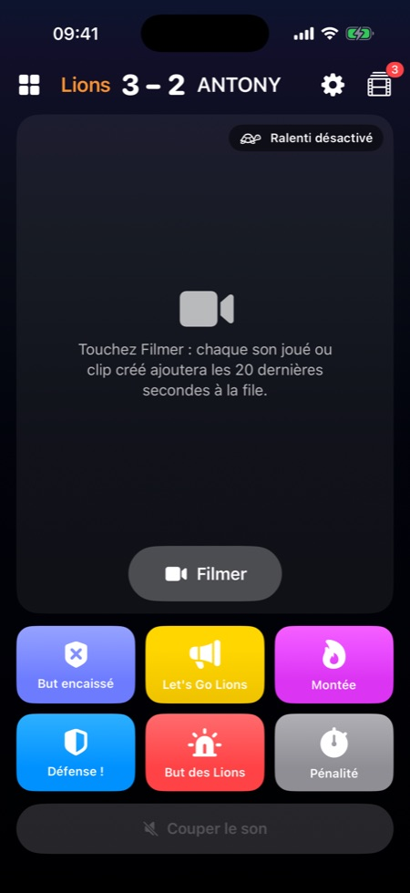
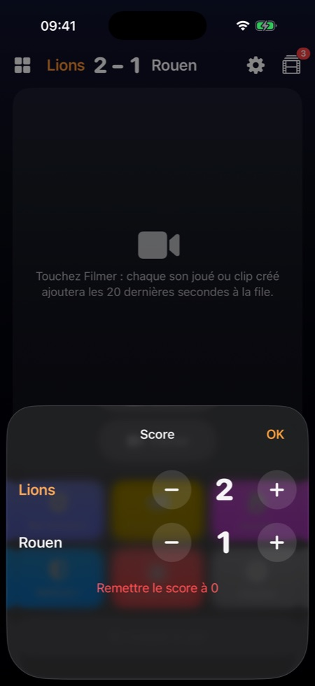
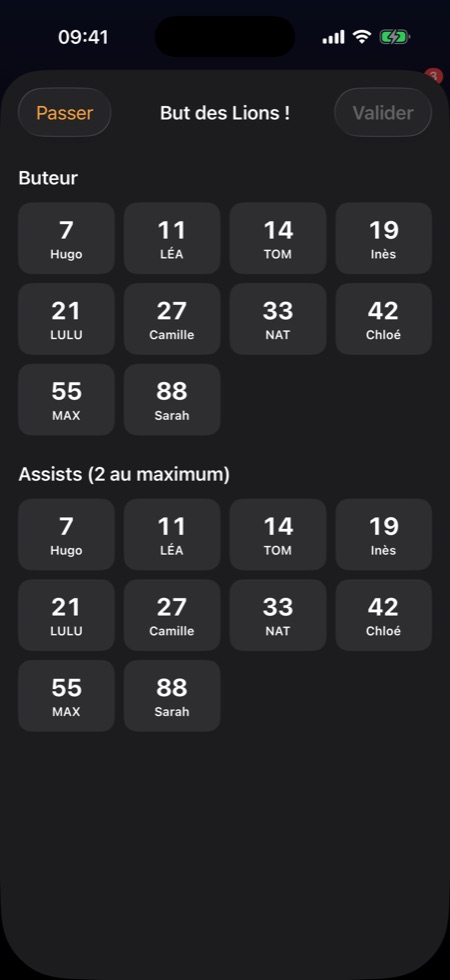
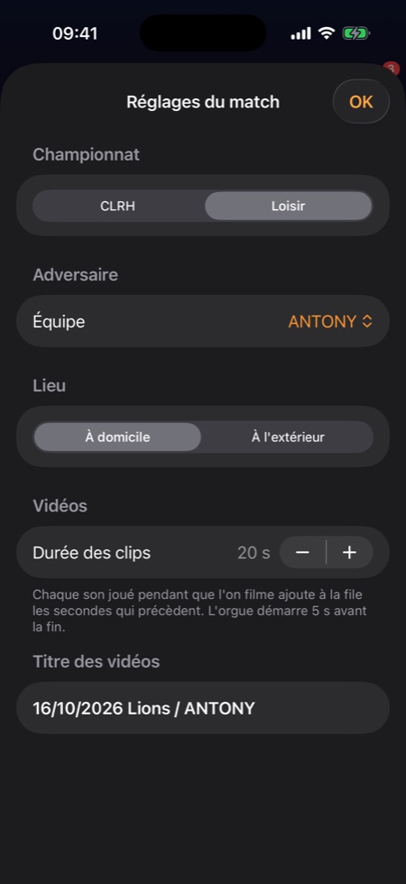
Capture vidéos d'entraînement
La caméra et un seul bouton pour créer un clip des dernières secondes ; le temps restant de la minuterie s'affiche si elle tourne.
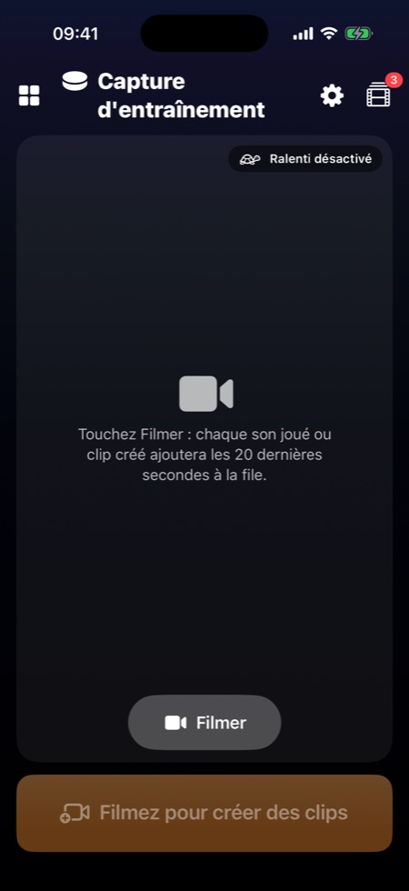
En paysage
Toute l'app tourne avec le téléphone. Pendant la capture, la vidéo prend presque tout l'écran : sons compacts et score à droite pour le match, bouton Clip posé sur la vidéo pour l'entraînement.
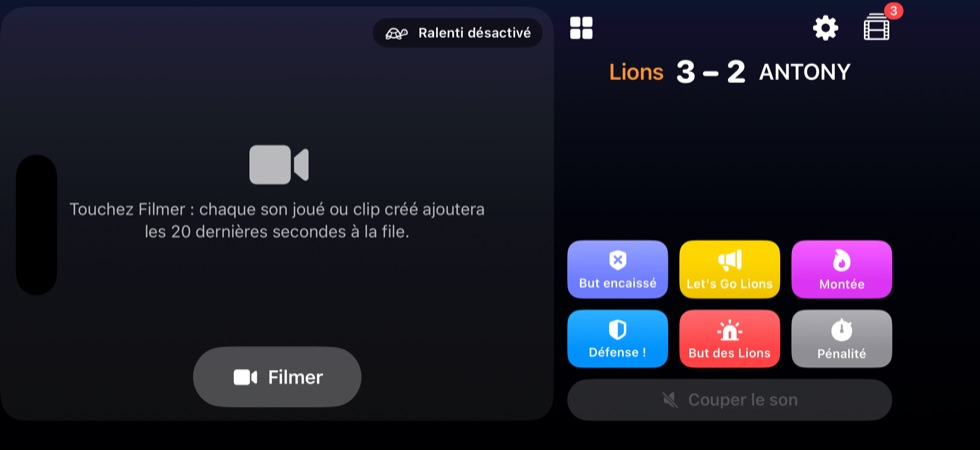
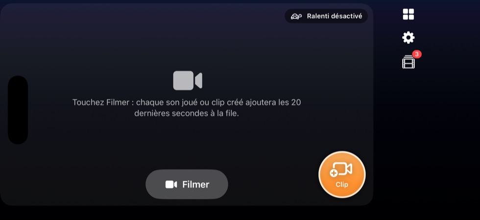
Minuterie
Elle alterne temps de jeu (vert) et de repos (bleu) jusqu'à une heure limite, avec un buzzer à chaque changement. Elle continue de tourner et de sonner quand on passe à un autre écran.
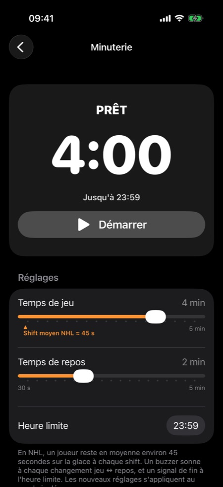
Miroir et analyse du mouvement
- Miroir : l'écran montre ce qui a été filmé quelques secondes plus tôt (délai de 1 à 30 s), pour se revoir sans toucher au téléphone.
- Squelette et mesures : angle des genoux (en vert dans la bonne position de hockey), hanche, buste, écart des patins, vitesse estimée.
- Tirs : une bulle « Tir ! » au bon moment, détectée au son et au geste des mains, avec la posture et la vitesse des mains au tir.
- Palet : sur une vidéo au ralenti, le palet est entouré en vert et sa vitesse s'affiche.
Tout se calcule sur l'iPhone, sans réseau.
Vidéos à publier
La file des clips : chaque clip se regarde, se corrige (but, tir, buteur, assists, score) et se partage ; son titre suit les corrections. On peut en sélectionner plusieurs pour les partager, les supprimer ou les enregistrer dans Photos.
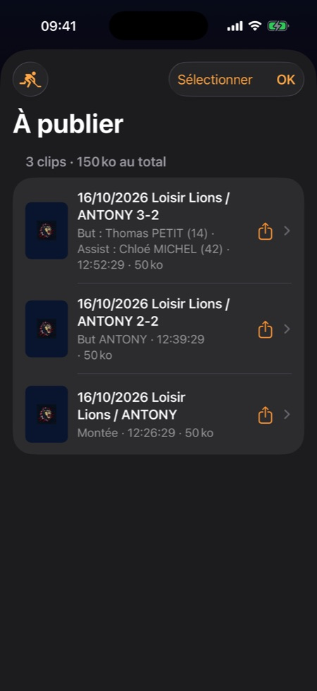
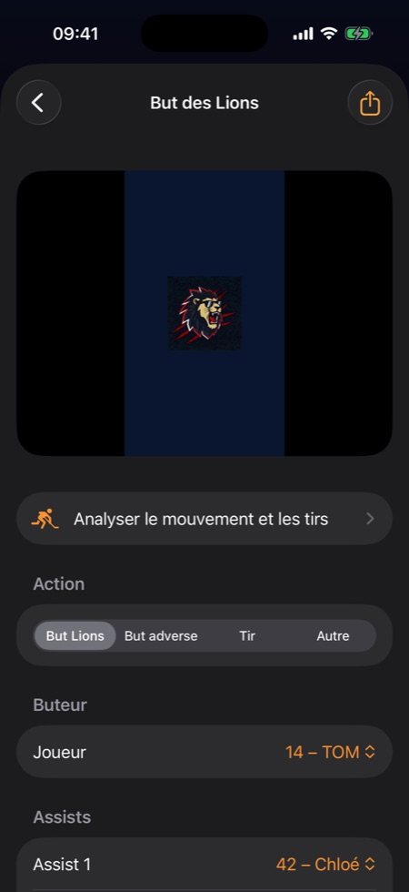
Bibliothèque d'exercices
Un éditeur de schémas sur une patinoire, avec les conventions habituelles (patin avant et arrière, conduite du palet, passe, tir, joueurs, plots…). Les exercices se découpent en étapes et s'animent.
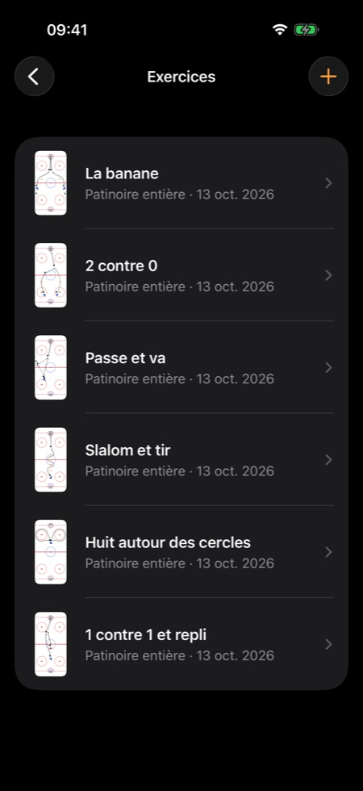
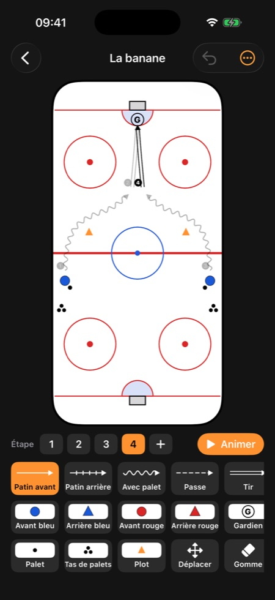
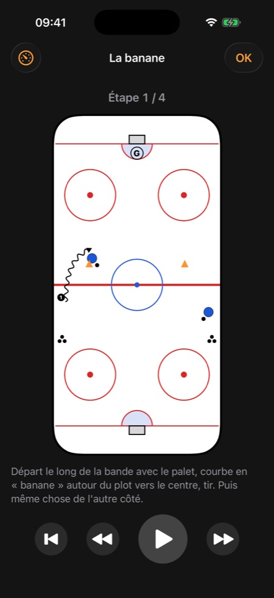
Le Coin de Xav : vidéos techniques
Depuis YouTube, Instagram ou Safari, Partager › LionsHockey range une vidéo dans une catégorie : types de tirs, patinage, palet, supériorité numérique… La bibliothèque est partagée avec toute l'équipe.
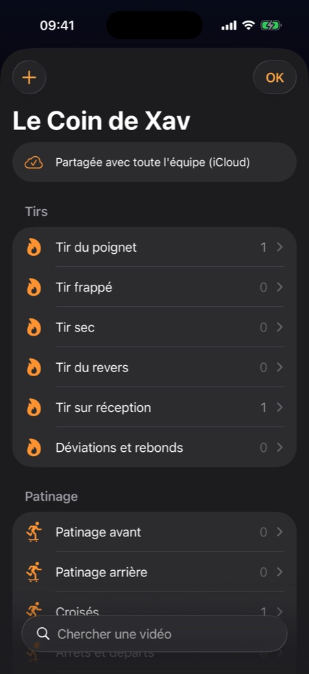
Règles et quiz
Trois quiz de 10 questions (gestes de l'arbitre, pénalités, déroulement du match) d'après le règlement de la fédération, les gestes de l'arbitre en fiches et le règlement complet avec recherche.
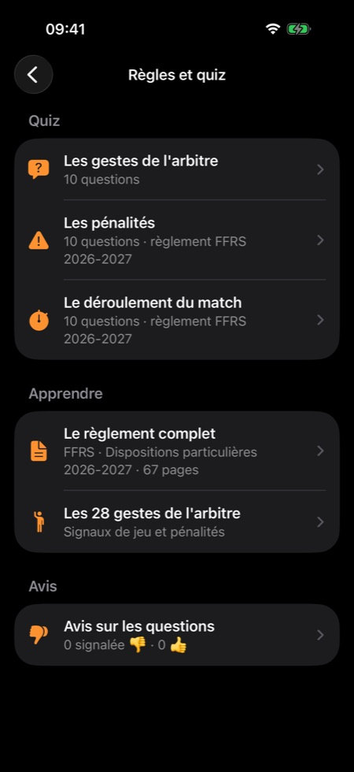
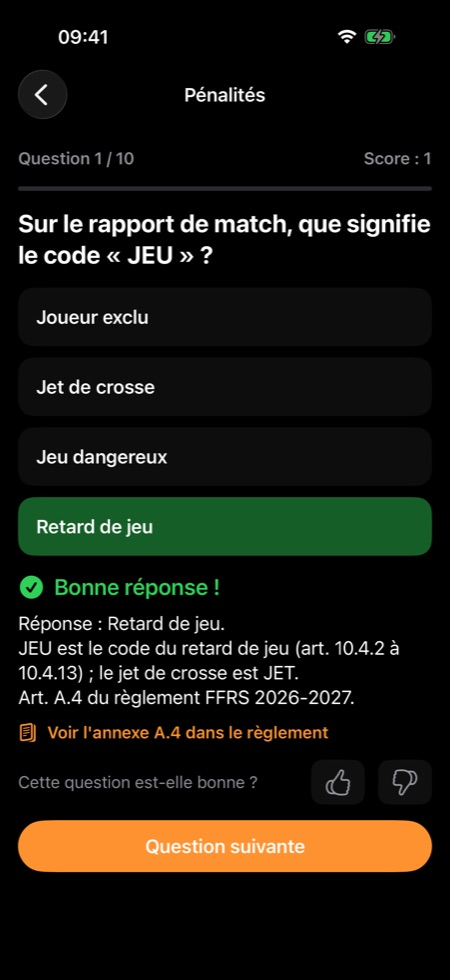
Équipe, clés et maillots
La liste des joueurs et, pour les clés et maillots de prêt, qui a quoi et depuis quand. Partagé entre les membres par iCloud.
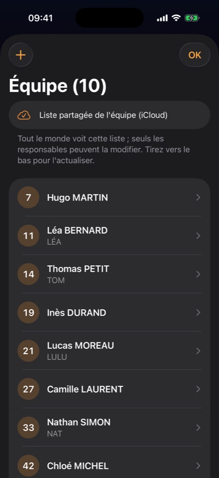
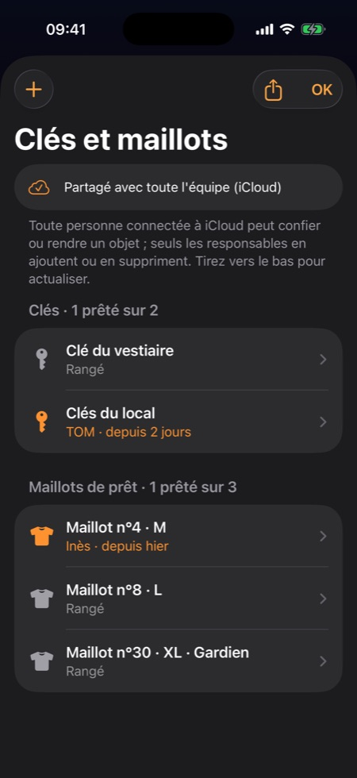